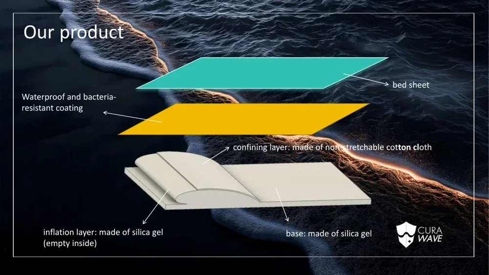
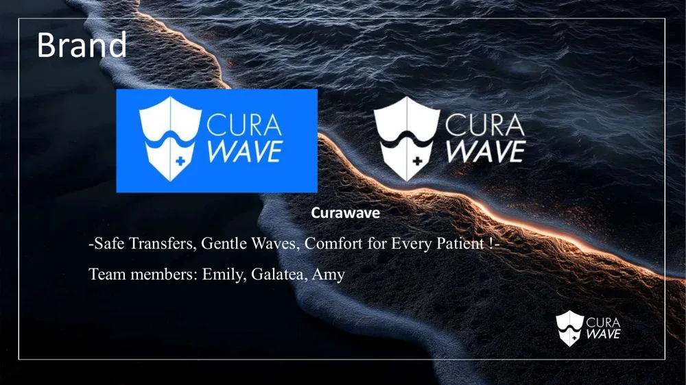

Curawave
A wave-bionic soft robotic mattress that slides a patient sideways onto another bed, with no one lifting.
Among 1,200 post-operative patients in one study, 15% had complications related to being moved. Curawave moves a patient the way a wave moves a boat: soft units tilt left and right in alternating groups and slide the patient horizontally onto the next bed.
0units in the full 18 × 20 design
0+prototype generations
0+parts printed or cast
0+people pitched to
01How one unit moves
Each unit has a hollow silicone inflation layer, a non-stretch cotton confining layer and a silicone base. Because the confining layer stretches less, the unit tilts sideways when inflated. Neighbouring groups inflate in turn, so a sideways wave carries the patient across.

02How we built it
01Model the mouldsAutodesk Fusion: bases, top, bottom and core.
02Cast and testMoulds 3D-printed; silicones of different thickness compared.
03Valves + codeSolenoid valves switch the pump; an Arduino times them.
041 × 4 prototypeAir split four ways, each group on its own valve.
03From prototype to plan


